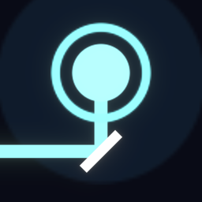

Support
Questions, a bug, or a level you think is impossible? Write to atakan.dnmz034@gmail.com. Please include your device model and the level number (for example "World 12 · 7").
Frequently asked
How do hints work?
You get 3 free hints every day. After that you can watch a short video for another hint. Premium gives unlimited hints. Undo and reset are always free.
How do I remove ads?
Buy Premium once in Settings. It removes ads between levels and makes hints unlimited.
I reinstalled the game and lost Premium.
Open Settings and tap "Restore purchases", signed in with the same Apple ID or Google account you bought it with.
Where is my progress stored?
Only on your device. Deleting the app deletes your progress.
How do I change my ad privacy choices?
Where the law requires it (for example in the EU and UK), Settings shows "Ad privacy choices". On iPhone you can also change tracking in Settings ▸ Privacy & Security ▸ Tracking.
Destek (Türkçe)
Soru, hata ya da çözülemez gibi görünen bir bölüm mü var? atakan.dnmz034@gmail.com adresine yaz; cihaz modelini ve bölüm numarasını (ör. "Dünya 12 · 7") eklemeyi unutma.
İpuçları nasıl çalışıyor?
Her gün 3 ücretsiz ipucun var. Sonrasında kısa bir video izleyerek bir ipucu daha alabilirsin. Premium ile ipucu sınırsız. Geri al ve sıfırla her zaman ücretsiz.
Reklamları nasıl kaldırırım?
Ayarlar'dan bir kez Premium satın al. Bölüm arası reklamlar kalkar, ipucu sınırsız olur.
Oyunu yeniden kurdum, Premium gitti.
Satın aldığın Apple kimliği ya da Google hesabıyla Ayarlar'da "Satın alımları geri yükle"ye dokun.
İlerlemem nerede saklanıyor?
Yalnızca cihazında. Uygulamayı silersen ilerleme de silinir.